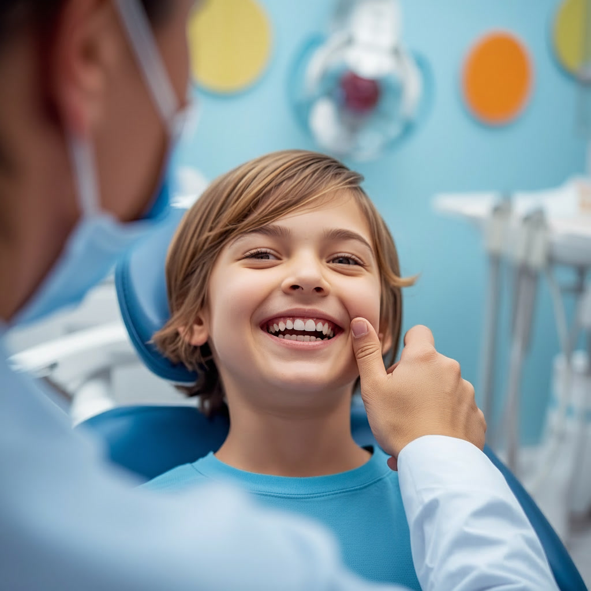

Здоровье улыбки
Правила ухода за зубами и рекомендации по поддержанию здоровья полости рта
Основные правила ухода за зубами
1
Чистка зубов
Чистите зубы минимум два раза в день: утром после завтрака и вечером перед сном.
Используйте зубную щетку средней жесткости и меняйте её каждые 2-3 месяца.
2
Правильная техника
Движения должны быть выметающими: от десны к краю зуба. Время чистки — не менее 2-3 минут.
Не забывайте чистить язык и внутренние поверхности зубов.
3
Зубная нить
Используйте зубную нить (флосс) ежедневно для очистки межзубных промежутков,
куда не может проникнуть щетка. Это предотвращает развитие кариеса между зубами.
4
Ополаскиватель
Применяйте ополаскиватель для полости рта после чистки зубов. Он помогает удалить
остатки пищи, укрепляет эмаль и освежает дыхание.
5
Регулярные визиты
Посещайте стоматолога для профилактического осмотра не реже двух раз в год.
Это позволяет выявить проблемы на ранней стадии и предотвратить осложнения.
6
Профессиональная гигиена
Раз в полгода проходите процедуру профессиональной гигиены полости рта.
Она включает удаление зубного налета и камня, полировку и фторирование.
Питание и здоровье зубов
✓ Полезные продукты
- Молочные продукты — богаты кальцием, укрепляют эмаль
- Овощи и фрукты — содержат витамины и клетчатку
- Рыба и морепродукты — источник фосфора и витамина D
- Орехи — содержат полезные микроэлементы
- Вода — способствует выработке слюны и очищению полости рта
✗ Вредные продукты
- Сладости и газированные напитки — способствуют развитию кариеса
- Кислые продукты — могут разрушать эмаль
- Красящие напитки — кофе, чай, вино могут окрашивать зубы
- Липкие продукты — ириски, карамель долго остаются на зубах
- Слишком горячая или холодная пища — может повредить эмаль
Профилактика стоматологических заболеваний
🦷
Профилактика кариеса
Регулярная гигиена, правильное питание, использование фторсодержащих паст
и герметизация фиссур у детей помогают предотвратить развитие кариеса.
🦷
Профилактика заболеваний десен
Ежедневная чистка зубов, использование зубной нити, массаж десен и регулярные
визиты к стоматологу снижают риск развития гингивита и пародонтита.
🦷
Защита эмали
Фторирование зубов, реминерализация эмали, избегание чрезмерно кислых продуктов
и правильная техника чистки помогают сохранить эмаль здоровой.
Особенности ухода за детскими зубами
Начинайте уход с первых зубов
Как только у ребенка появляется первый зуб, начинайте его чистить специальной детской щеткой.
Используйте детские пасты
Детские зубные пасты содержат меньше фтора и имеют приятный вкус, что мотивирует детей чистить зубы.
Контролируйте процесс
До 7-8 лет родители должны контролировать и помогать детям чистить зубы.
Ограничьте сладости
Сведите к минимуму потребление сладостей и сладких напитков, особенно перед сном.
Герметизация фиссур
После прорезывания постоянных зубов рекомендуется провести герметизацию фиссур для защиты от кариеса.

Часто задаваемые вопросы
Как часто нужно менять зубную щетку?
Зубную щетку рекомендуется менять каждые 2-3 месяца или сразу после перенесенного
инфекционного заболевания. Также стоит заменить щетку, если щетинки стали изношенными.
Какая зубная паста лучше?
Выбирайте пасту с фтором, который укрепляет эмаль. Для чувствительных зубов подойдут
специальные пасты. При выборе лучше проконсультироваться со стоматологом.
Нужно ли чистить зубы после каждого приема пищи?
Достаточно чистить зубы два раза в день. После еды можно прополоскать рот водой
или использовать жевательную резинку без сахара в течение 10-15 минут.
Что делать при кровоточивости десен?
Кровоточивость десен может быть признаком гингивита. Не прекращайте чистить зубы,
но используйте мягкую щетку. Обязательно обратитесь к стоматологу для консультации.
Как часто нужно делать профессиональную чистку?
Рекомендуется проходить профессиональную гигиену полости рта раз в 6 месяцев.
При наличии заболеваний пародонта или склонности к образованию зубного камня — чаще.
Заботьтесь о здоровье вашей улыбки
Регулярный уход и профилактические визиты к стоматологу — залог здоровых зубов на долгие годы